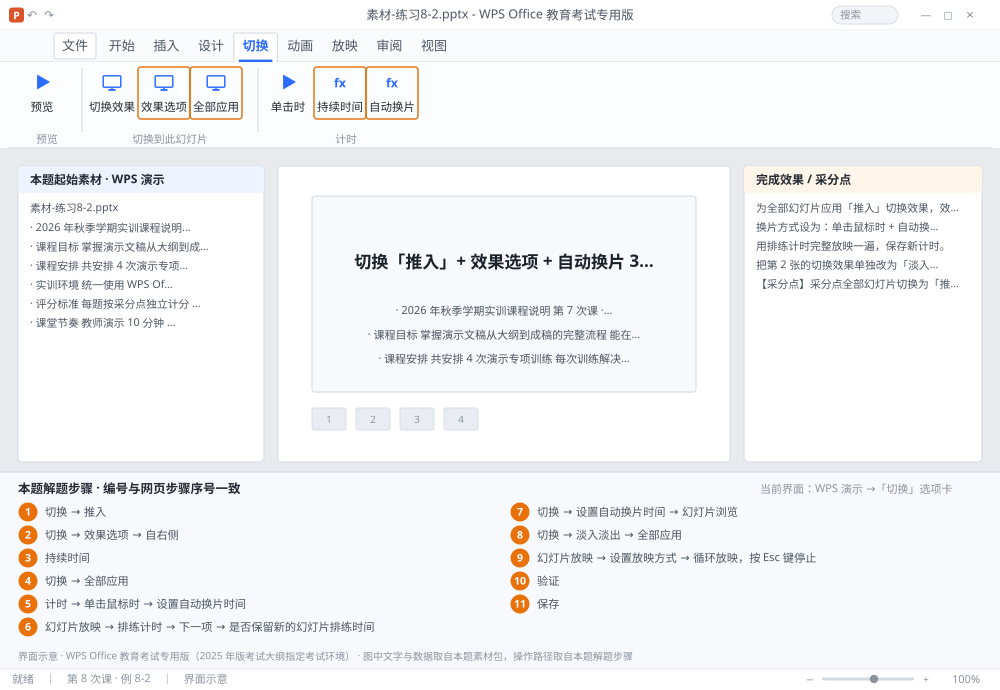

完成比对文档 · 例 8-2
切换「推入」+ 效果选项 + 自动换片 3 秒 + 排练计时 + 循环放映 ｜ 第 8 次课 / WPS 演示 ｜ 网页：实操-演示2.html ｜ 考试环境：WPS Office 教育考试专用版（2025 年版考试大纲指定考试环境）
用途 本页按修订后的题目要求与解题步骤生成，是交卷自查的结果基准：
逐项列出每一步应出现的可复核结果，配合模拟操作截图与解题结果文件使用。
它不是素材包的一部分，不会预置答案动作；起始素材仍从本题素材包下载。
一、本题起始素材包
目录：练习素材/练习8-2-切换与排练计时/ ｜
下载包：练习素材/下载/练习8-2-切换与排练计时.zip
二、题目要求
- 为全部幻灯片应用「推入」切换效果，效果选项「自右侧」，持续 0.75 秒。
- 换片方式设为：单击鼠标时 + 自动换片 3 秒（两者同时生效）。
- 用排练计时完整放映一遍，保存新计时。
- 把第 2 张的切换效果单独改为「淡入淡出」（其余页保持推入）。
- 设置放映方式为「循环放映，按 Esc 键停止」。
- 保存为 学号-姓名-练习8-2.pptx。
三、解题步骤（编号与下方核对表、截图编号一致）
- 选切换。「切换」选项卡 → 效果库 → 找到「推入」→ 单击。
- 效果选项。「切换」→「效果选项」→ 选「自右侧」。
- 时长。在「持续时间」框输入 0.75 秒。
- 全部应用。点「切换」选项卡右侧的「全部应用」——这一步不能漏，否则只有当前页生效。
- 设换片方式。在「计时」组里勾选「单击鼠标时」；同时勾选「设置自动换片时间」并填 00:03.00（即 3 秒）。两者同时勾选时，先到者触发。
- 排练计时。「幻灯片放映」→「排练计时」→ 从第 1 张开始放映，左上角有计时器 → 按实际讲解节奏点「下一项」→ 结束时提示「是否保留新的幻灯片排练时间」→ 选「是」。
- 确认计时。回「切换」→ 看「设置自动换片时间」是否已被排练值覆盖；在「幻灯片浏览」视图下，每张缩略图下方会显示停留秒数。
- 单独改一页。选中第 2 张 →「切换」→ 选「淡入淡出」→ 不要点「全部应用」。
- 循环放映。「幻灯片放映」→「设置放映方式」→ 勾选「循环放映，按 Esc 键停止」→ 确定。
- 验证。按 F5 放映，等待 3 秒应自动翻页；第 2 张的过渡明显不同。
- 保存。Ctrl+S。
四、完成效果 / 采分点
采分点全部幻灯片切换为「推入」且效果选项自右侧 · 持续 0.75 秒 · 同时勾选单击与 3 秒自动换片 · 排练计时已保存 · 第 2 张单独为「淡入淡出」 · 已启用循环放映
五、逐项完成核对表
| 步骤 | 关键操作路径 | 应出现的结果（可复核） |
|---|
| 1 | 选切换 | 「切换」、「推入」 |
| 2 | 效果选项 | 「切换」、「效果选项」、「自右侧」 |
| 3 | 时长 | 「持续时间」 |
| 4 | 全部应用 | 「切换」、「全部应用」 |
| 5 | 设换片方式 | 「计时」、「单击鼠标时」、「设置自动换片时间」 |
| 6 | 排练计时 | 「幻灯片放映」、「排练计时」、1 张、「下一项」、「是否保留新的幻灯片排练时间」 |
| 7 | 确认计时 | 「切换」、「设置自动换片时间」、「幻灯片浏览」 |
| 8 | 单独改一页 | 2 张、「切换」、「淡入淡出」、「全部应用」 |
| 9 | 循环放映 | 「幻灯片放映」、「设置放映方式」、「循环放映，按 Esc 键停止」 |
| 10 | 验证 | F5、2 张 |
| 11 | 保存 | 保存 |
六、模拟操作截图

界面示意 · WPS Office 教育考试专用版 · 橙色编号与本题解题步骤序号一致；
图中文字与数据取自本题素材包，功能入口取自本题解题步骤。
核对方法：按网页解题步骤完成并另存自己的成稿后，逐行比对本表第 3 列的
参数、公式、区域、文件名与对象数量；再对照网页「完成效果 / 采分点」检查版式是否一致。